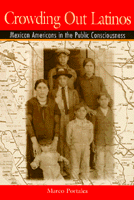

A provocative study of Latino education, media representation, and Chicano literature
A provocative study of Latino education, media representation, and Chicano literature


 A provocative study of Latino education, media representation, and Chicano literature
A provocative study of Latino education, media representation, and Chicano literature

|  |
Crowding Out LatinosMexican Americans in the Public ConsciousnessMarco Portalespaper EAN: 978-1-56639-743-8 (ISBN: 1-56639-743-X) |
"In Crowding Out Latinos, Marco Portales sets out to account for the deficiencies found in present day educational practices in connection with Chicano youth.... He makes it clear that viewing Hispanics as one undifferentiated mass leads to dangerous stereotypes and a tendency to erase particular cultural identities."
—Emory Elliot, Distinguished Professor of English and Director, Center for Ideas and Society, University of California, Riverside
In this groundbreaking analysis, Marco Portales examines the way in which education and the media act as immobilizing social forces to shape the Latino world that exists despite the best efforts of many Mexican Americans and other Latinos. The delicate relationships between what Latinos are and what they seem to be, as perceived both by the larger society and by Latinos themselves, create and craft a culture that students of American culture have not sufficiently studied or understood.
As bandidos or gigolos, drug users or unwed mothers, Latinos continue to figure in the public consciousness primarily as undesirables. Despite decades of effort by Spanish-speaking Americans to improve their image in the United States, Mexican Americans and other resident Latinos are still largely perceived by other Americans as poverty-stricken immigrants and as second-class citizens. Accordingly, the great majority of Latino citizens receive substandard educations, equipping them for substandard jobs in substandard living environments.
The lives of Mexican Americans and other Latinos, Portales contends, can best be illuminated by looking at the history of Chicanos and particularly through Chicano literature, which dramatizes the impact of education and the media on Latinos. Like Irish literature, Chicano literature has sought to articulate and to establish itself as a postcolonial voice that has struggled for national attention. Through psychological and sociopolitical representations, Chicano writers have variously used anger, indifference, fear, accommodation, and other conflicting emotions and attitudes to express how it feels to be seen as an immigrant or a foreigner in one's own country.
Portales looks at four Chicano literary works—Americo Paredes' George Washington Gomez, Anthony Quinn's The Original Sin, Sandra Cisneros' House on Mango Street, and Ana Castillo's Massacre of the Dreamers—to focus attention on social issues that impede the progress of Latinos. By doing so, he hopes to engage both Latino and non-Latino Americans in an overdue dialogue about the power of education and the media to form perceptions that can either empower or repress Latino citizens.
Excerpt available at www.temple.edu/tempress
"In his book, Crowding Out Latinos: Mexican Americans in the Public Consciousness, Professor Marco Portales argues convincingly that Hispanics have been excluded from american society, and marshals an impressive amount of evidence to support this thesis."
—Ishmael Reed, Professor of English, University of California, Berkeley
"In Crowding Out Latinos, Marco Portales draws from Chicano/a literature, sociology, and demographic studies in order to understand the current status and future of one of the largest and fastest growing populations in the U.S. His argument will fuel much needed debate on educational policies and the importance of Mexican Americans to the well-being of the U.S. society in general."
—Teresa McKenna, Associate Professor of English, University of Southern California, Los Angeles
"This volume looks at how writers such as Americo Paredes, Sandra Cisneros, and Ana Castillo have addressed the historical disenfranchisement of Latinos in the United States and the realities of Latino life. Marco Portales examines these authors' texts as interventions into the problematic educations that most students receive in the nation's schools, which, he argues, substantially contribute to the troubled relationship between the American media and Latinos."
—American Literature
An interview with Dr. Marco Portales by Dr. Robert H. Leos can be found at his site: http://www.robertleos.com/Portales.pdf
Preface
About the Frontispiece
Acknowledgments
1. Introduction
2. Chicano Literature and Irish Literature
3. Latinos in American Culture
4. Hispanics and the American Media
5. Love and the Mexican American School Experience
6. Enhancing the Visibility of Chicano Literature
7. Americo Paredes's George Washington Gomez: Educating Mexican American Students
8. The Lives of a Chicano Film Star: Anthony Quinn's The Original Sin
9. Rape and Barrio Education in Sandra Cisneros's The House on Mango Street
10. Ana Castillo's Massacre of the Dreamers: Communicating the Chicana Experience
11. Chicano Writing versus Chicano Life
12. Postscripts
Notes
Bibliography
Index
 | Marco Portales is Professor of English at Texas A&M University, College Station and the author of one previous book, Youth and Age in American Literature. |
Latino/a Studies
American Studies
Literature and Drama
© 2015 Temple University. All Rights Reserved. This page: http://www.temple.edu/tempress/titles/1501_reg.html.